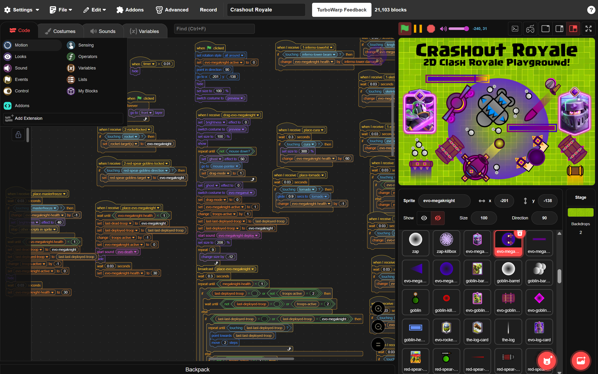

Coding
I've always tried to learn more about coding over the years, but the best thing I've done was learn how to make a website.
I know that it's also important to having a website as a first step, but I also feel like I'm not commiting hard enough
to actually learning more complicated programming languages. The only games I've made are made on a kids program where you drag
blocks around and make your own assets with simple tools, but I really want to step up my game and learn actual coding
in languages like Javascript or C++, which are really good starting bases for languages compared to things like Scratch.
Though you can tell me whether this is simple or not.

That's a lot of stuff for one game, but I also want to elaborate on this image.
This is Scratch, the web coding platform I've previously mentioned before. Scratch is a kids program made to be easy to use by utilizing blocks, which act as commands that you just drag and drop onto your own workspace. Scratch gives kids the ability to make games using these blocks, and it also gives them the ability to make their own graphics and audio assets, or import their own.
I've used Scratch for about 5-6 years, and I've made a pretty decent number of games on it. Not to say that those games are necessarily good, but I've put a good amount of effort into them.
Just to give you an idea, here are some example games I made:
Game #1 Download
Game #2 Download
These are just 2 simple concept games, but during the time that I made them, I put a lot of effort into trying to finish them. I remember that I would work on it during class, after class, even before class. I would devote my time to make sure that these games were functioning properly, but most importantly, I wanted to make sure that they were actually fun.
I'm more into Sandbox games than anything, which means that I would have to build the game around the player's own interests, and I would have to make sure that the player has freedom to do whatever. These types of games were made around that core theme of having freedom, but at the same time I wanted my games to be engaging and fun.
With that being said, I used Scratch all the time throughout middle school, and it wasn't until high school that I started using another version of scratch called Turbowarp. Unlick modern Scratch which is riddled with bugs and performance issues, Turbowarp utilizes Javascript to make sure that projects run smoothly without stutters or lag. Turbowarp has a lot of features that Scratch lacks natively, such as extensions, addons, and advanced project settings. Using Turbowarp has been amazing for making games, especially because it doesn't require an internet connection to run, it saves all of your projects locally.
Moving on from the topic of Scratch, I have a bit of previous experience in working in web design. When I was a freshman in high school, I remember taking an AVID class (Advancement Via Individual Determination), and in that class, one of the projects we worked on required us to make a presentation about our passion. Most people made a simple Google Slides or Canva presentation, but that day, I felt like going one step further and making an entire website. The only problem was, I didn't have a lot of knowledge in HTML and CSS, and even if I did, my hardware was too underpowered to run any sort of standalone code editors like VS Code (I was using a Chromebook at that time, and it was very low-end)
I ended up using that same Chromebook to make a website using a web-based online code editor called W3Schools. Since they already had built-in tutorials and even an entire HTML and CSS reference, I was able to make a simple yet effective presentation-themed website that explained my passion for working with computers and wanting to learn how to code.
If you wanna check out the website, click here:
Visit AVID 9 Passion Project
I'm proud to say that now that I have all of this free time, I'm finally taking action on improving myself and learning new things.
My choice in making this website is a good example of my initiative, because now I get to have somewhere to share my experience about my journey through learning how to code and living out my passion to an extent. Now that I've made it this far into the website, I believe I can finally ask this:
Have you found the secret yet?
Click here to move on:
Rant